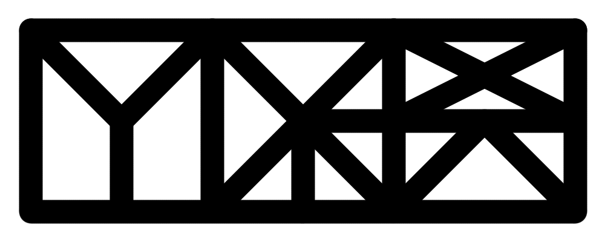
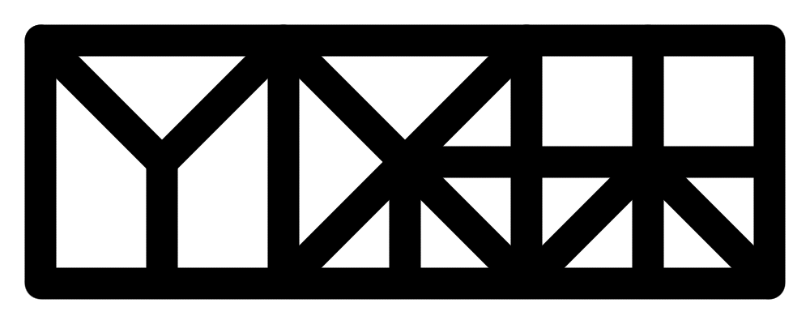
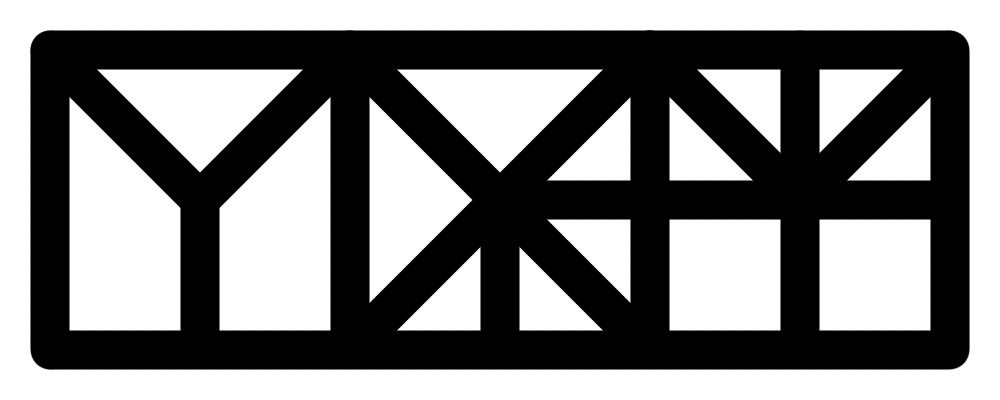
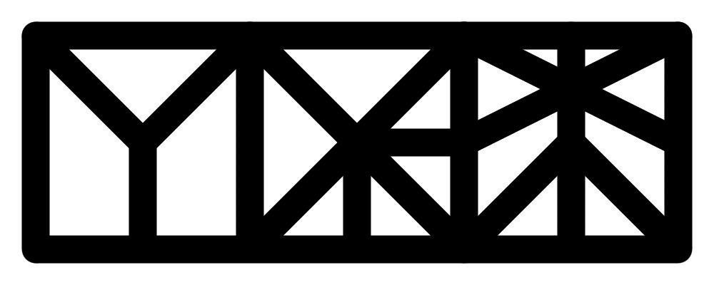
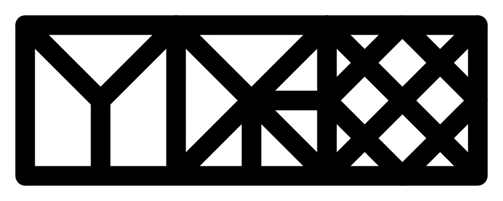

The Savilsh People
The Savilsh People Home
HomeThe Savilsh Grammar

i. Word Construction


ii. Word Order

iii. Cases

iv. Gender
 After discussing the case system, you might see this title, and sigh a breath of relief. You know about gender already: masculine, feminine, and sometimes neuter. However, don't feel safe yet, because gender in linguistics isn't always synonymous with the colloquial definition. Grammatical gender's definition is simply "categorizing nouns in systems." In many European languages, these categories reflect biological gender, but you might be shocked to find out that this is not universal. It's less common, but languages will either have classes that are completely arbitrary or use different practical categories. Proto-Indo-European had an animate-inanimate gender system, and modern example of this is Ojibwe, spoken around the Great Lakes by indigenous Americans. So, what are the genders in Savilsh?
After discussing the case system, you might see this title, and sigh a breath of relief. You know about gender already: masculine, feminine, and sometimes neuter. However, don't feel safe yet, because gender in linguistics isn't always synonymous with the colloquial definition. Grammatical gender's definition is simply "categorizing nouns in systems." In many European languages, these categories reflect biological gender, but you might be shocked to find out that this is not universal. It's less common, but languages will either have classes that are completely arbitrary or use different practical categories. Proto-Indo-European had an animate-inanimate gender system, and modern example of this is Ojibwe, spoken around the Great Lakes by indigenous Americans. So, what are the genders in Savilsh?
 The Savils' categorization of nouns reflect the animistic religions popular in their culture, and while I will use English translations that reflect this terminology, it is important to recognize that there is nothing akin to modern monotheism in their religions. The 4 genders are divine, animate, inanimate, and demonic. What is important to clarify right off the bat is that simply because a noun is divine or demonic does not automatically mean a. the object in question has to be religious in nature or b. the Savilsh people believe these things are imbued with spirits. However, there are cultural reasons why there is a spiritual association with these two genders. This is much like how objects in certain languages will be either masculine or feminine without possessing any material reason for being labeled such. House is masculine in Russian, but feminine in Spanish. However, you know those genders are masculine or feminine and not a different gender, because of the cultural associate and also women and men are declined accordingly to those genders.
The Savils' categorization of nouns reflect the animistic religions popular in their culture, and while I will use English translations that reflect this terminology, it is important to recognize that there is nothing akin to modern monotheism in their religions. The 4 genders are divine, animate, inanimate, and demonic. What is important to clarify right off the bat is that simply because a noun is divine or demonic does not automatically mean a. the object in question has to be religious in nature or b. the Savilsh people believe these things are imbued with spirits. However, there are cultural reasons why there is a spiritual association with these two genders. This is much like how objects in certain languages will be either masculine or feminine without possessing any material reason for being labeled such. House is masculine in Russian, but feminine in Spanish. However, you know those genders are masculine or feminine and not a different gender, because of the cultural associate and also women and men are declined accordingly to those genders.
 Before moving to noun declension, let's begin with pronouns. Pronouns can be singular, dual (exactly 2), or plural, and they can be in 1st, 2nd, or 3rd person. There is also 4 cases and 4 genders, so if you do the math, there are 144 different pronouns. You will notice that many of the pronouns are spelt the same way yet pronounced differently. How do you know which one to use? Read aloud: "I want to read 'Anna Karenina,' because last week, I read 'War and Peace.'" "Read" is spelt the same but you know which pronunciation to use by context clues, e.i. the tense. Context is key! Here are the declension tables:
Before moving to noun declension, let's begin with pronouns. Pronouns can be singular, dual (exactly 2), or plural, and they can be in 1st, 2nd, or 3rd person. There is also 4 cases and 4 genders, so if you do the math, there are 144 different pronouns. You will notice that many of the pronouns are spelt the same way yet pronounced differently. How do you know which one to use? Read aloud: "I want to read 'Anna Karenina,' because last week, I read 'War and Peace.'" "Read" is spelt the same but you know which pronunciation to use by context clues, e.i. the tense. Context is key! Here are the declension tables:
| Divine | |||||||||
|---|---|---|---|---|---|---|---|---|---|
| 1st Person | 2rd Person | 3rd Person | |||||||
| Singular | Dual | Plural | Singular | Dual | Plural | Singular | Dual | Plural | |
| Nominative |  [ʃkaɪl] |
 [ʃkaɪt] |
 [ʃkaɪd] |
 [ʃkaʰp] |
[ʃkap] |
[ʃkad] |
 [ʃkeʰʦ] |
[ʃkeʦ] |
[ʃked] |
| Ergative | [ʃleɪm] | [ʃteɪm] | [ʃdeɪm] | [ʃʰpen] | [ʃpen] | [ʃden] | [ʰʦeŋ] | [ʃʦeŋ] | [ʃdeŋ] |
| Dative | [ʃlaɪm] | [ʃtaɪm] | [ʃdaɪm] | [ʃʰpan] | [ʃpan] | [ʃdan] | [ʰʦaŋ] | [ʃʦaŋ] | [ʃdaŋ] |
| Prepositional | [ʃkaɪla] |
[ʃkaɪta] |
[ʃkaɪda] |
[ʃkaʰpa] |
[ʃkapa] |
[ʃkada] |
[ʃkeʰʦa] |
[ʃkeʦa] |
[ʃkeda] |